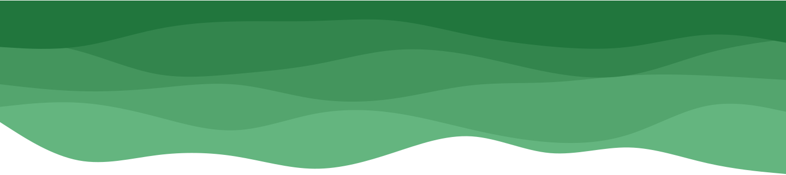
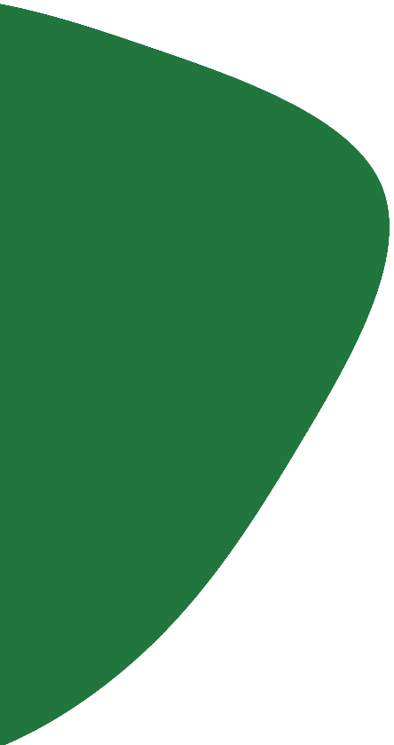

Andressa

Você conhece a iniciativa Ponto Verde?
É um projeto de alguns alunos da EACH-USP voltado para a conscientização sobre o descarte de lixo eletrônico e seus danos ao meio ambiente e a divulgação de pontos de coleta.
Lembrando aqui que contam como lixo eletrônico: celulares, computadores, pilhas, baterias, lâmpadas e outros tipos de eletrônicos.

Sabe qual o ponto de coleta mais perto de você?
Se não, é muito fácil de descobrir: basta baixar nossa lista para o Google Maps apontando a câmera do celular para este QR Code ou clicando no botão abaixo.

Fundadores do projeto
Nos ajude a manter o projeto
Para continuar o projeto precisamos do feedback da comunidade. Caso saibam de algum ponto de coleta que não consta na lista ou de alguma inconsistência nos pontos, nos avisem!